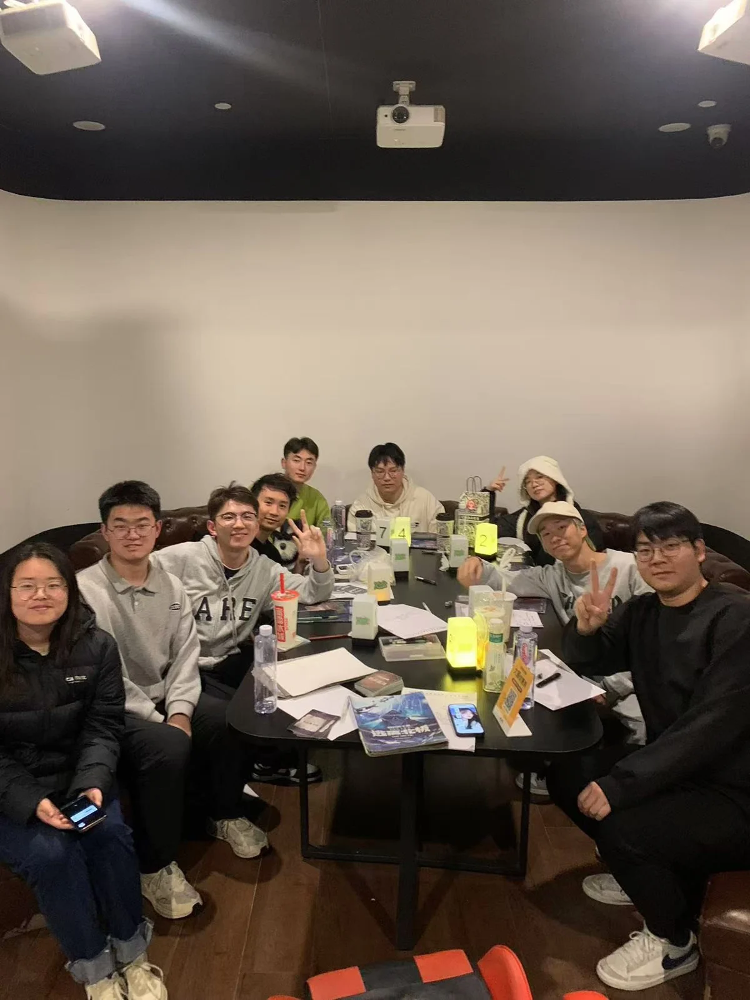
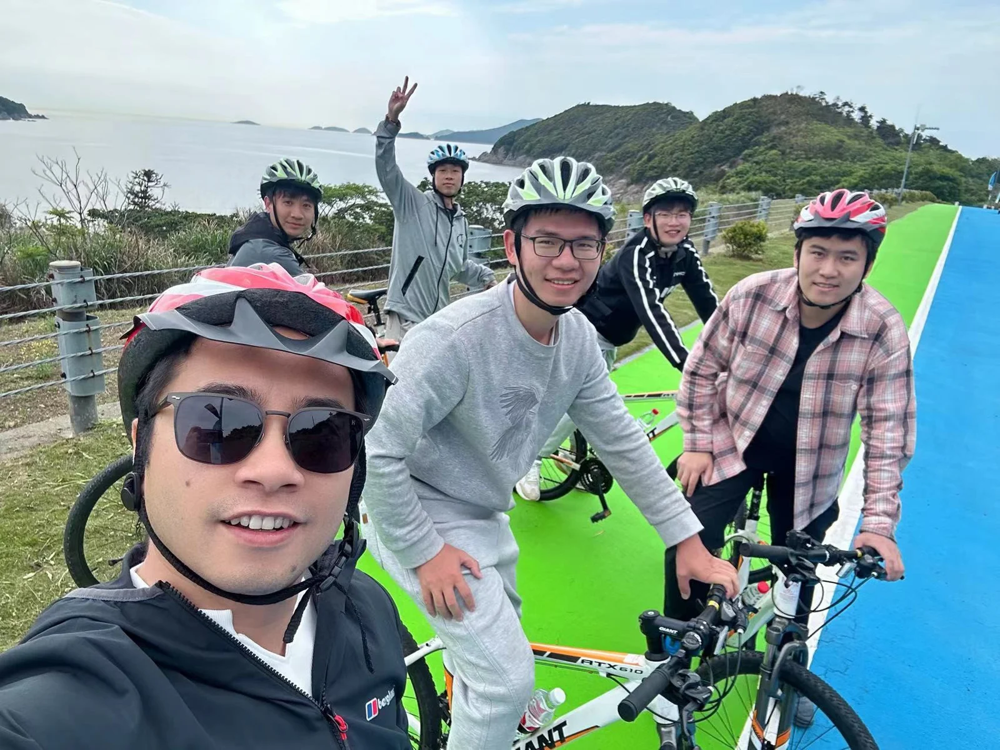
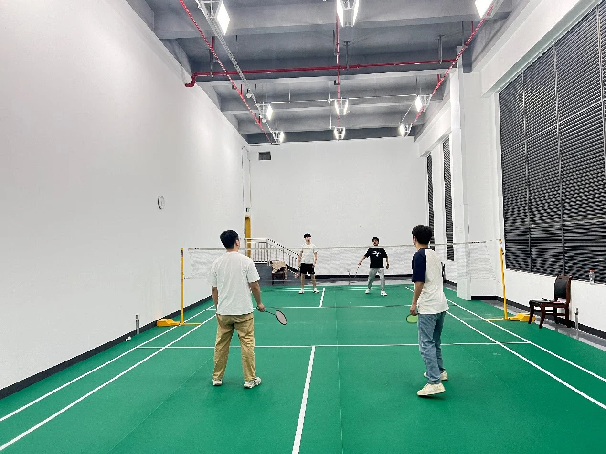

科研“打工人”的趣味生活：不止于实验与数据
在科研的道路上，勤奋与创新是永恒的主题。IMED课题组的成员们以严谨的态度和饱满的热情投入日常工作，工作日里，大家按时到岗，全身心投入到复杂的研究任务中，用智慧和汗水为科研事业贡献力量。然而，这个充满活力的团队深知，科研工作并非生活的全部，劳逸结合才是保持高效和创造力的关键。
在紧张的科研工作之余，课题组的成员们积极组织丰富多彩的娱乐活动，为枯燥的科研生活注入了无限乐趣。每到周末，实验室便化身为欢乐的海洋。组内成员们纷纷聚集在一起，开启一场场精彩纷呈的桌游之旅。从策略满满的《现代艺术》到充满智慧博弈的《宝石商人》，再到需要团队协作的《富饶之城》，组内已经积累了众多桌游，每一次聚会都能带来全新的挑战与欢乐。大家在游戏过程中尽情发挥智慧，享受竞争与合作的乐趣，欢声笑语回荡在每一个角落。
除了桌游，剧本杀也是课题组成员们的热门选择。无论是充满悬疑的机智本、烧脑的推理本，还是轻松幽默的欢乐本、触动人心的情感本，大家都能沉浸其中，尽情展现自己的推理能力和表演天赋。在剧本的世界里，科研人员们暂时放下手中的实验和数据分析，化身为侦探、侠客、贵族等角色，用另一种方式锻炼思维和表达能力。
当然，课题组的娱乐活动不仅限于室内游戏。在阳光明媚的日子里，成员们还会组织户外运动，如骑行、羽毛球和垂钓等。骑行队穿梭在城市的街道和郊外的山林之间，感受自然的美景与自由的风；羽毛球赛则在校园的运动场上如火如荼地展开，大家挥洒汗水，切磋技艺；而垂钓爱好者们则在宁静的湖边享受宁静与专注，用另一种方式放松身心。
张元迪同学表示，“通过这些娱乐活动，我们不仅能够缓解科研压力，还能增进团队成员之间的交流与合作，营造一个更加和谐、愉快的工作氛围。”
在这样的环境中，课题组的成员们不仅在科研上取得了显著的成绩，更在生活和娱乐中找到了平衡。他们用实际行动证明，科研与娱乐并非对立，而是可以相互促进、相得益彰。这种独特的团队文化，不仅让每一位成员都能在工作中保持最佳状态，也让整个课题组充满了活力与创造力，成为科研领域中一道亮丽的风景线。


